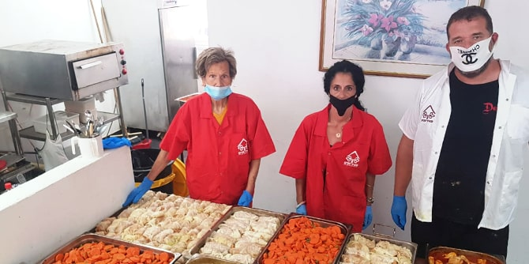
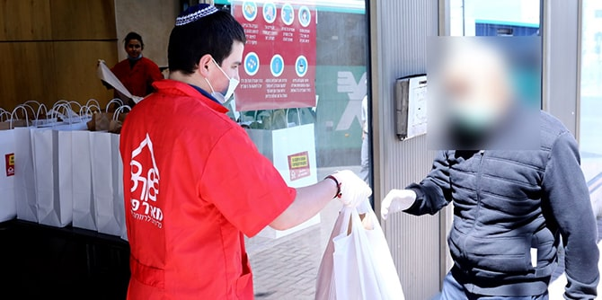

מאז שנת 2000, רשת בתי ההסעדה של ארגון מאיר פנים מסייעת לנזקקים מכל מגזרי החברה הישראלית. הארוחות מוגשות חינם, באווירה חמימה כמו במסעדה, כדי להבטיח את תחושת הכבוד והערך של כל אדם.
לפני שמונה-עשרה שנה הקים ניסים אלמקייס, בוגר תוכנית מנדל למנהיגות מקומית בירוחם וברמת הנגב (ספטמבר 2016 - יולי 2018), את סניף דימונה-ירוחם של ארגון מאיר פנים. ניסים הוא גם פעיל חברתי ומעורב בכמה פורומים של מעורבות חברתית. הוא הקים מועדון לניצולי שואה בדימונה, ייסד את סיורי ההורים בירוחם, ומפעיל מחסנים של פריטי יד שנייה לנזקקים בירוחם ובדימונה.
בית ההסעדה מאיר פנים בדימונה מופעל בשיתוף עם מחלקת הרווחה בעיר, ומעסיק כ-13 עובדים (שלושה עובדים בשכר ועשרה מתנדבים). המקום מספק חינם מדי יום כ-500 ארוחות לנזקקים. שנת 2019 הייתה שנה של פעילות שיא לסניף דימונה-ירוחם. בסניף הוגשו אלפי ארוחות חמות, ניתנו מאות שוברים לרכישת מזון, חולקו מאות סלי מזון, נערך סדר פסח ציבורי, ומתנדבים מפרויקט
תגלית באו להתנדב מדי שבוע.

עם תחילת משבר הקורונה בישראל הושבתו בבת אחת כמעט כל פעילויות הארגון – דווקא בשעה שהיו נחוצות יותר מכול. זאת לצד ירידה פתאומית בתרומות הפרטיות – החיוניות לארגון וניתנו בעיקר על-ידי תושבי המקום – בחשש מפני המשבר הכלכלי.
במקביל חלה עלייה חדה במספר המובטלים: בשבועות הראשונים של המשבר עלה שיעורם בכל הארץ מ-4% ל-26%, ודמי האבטלה הגיעו לעתים קרובות באיחור רב.
כדי לסייע למאיר פנים לחדש את פעילותו במהירות האפשרית, העניקה קרן מנדל תמיכה שאפשרה לניסים לגייס כ-15 בני נוער ממשפחות מוחלשות מדימונה ומירוחם שיתנדבו לסייע לקשישים בקהילה. צעירים מקומיים אלו סיפקו תמיכה חיונית יומיומית לקשישים: שימשו להם חברה, שוחחו עמם ודאגו לצרכים הבסיסיים שלהם, בכלל זה חלוקת מזון וארוחות מבושלות. כמו כן הם סייעו לקשישים הבודדים שבבעלותם טלפונים חכמים להיות מחוברים לעולם.
בתמורה לעזרתם החשובה, וברגע שהמצב יאפשר, בני הנוער ישתתפו ב"סדנת שפים" ובה יקבלו הכשרה מקצועית כדי להפוך לעוזרי שף. בתום הסדנה יקבלו המתנדבים, שלאיש מהם אין תעודת בגרות, תעודה המוכרת על-ידי משרד הכלכלה והתעשייה. תעודה זו תסייע להם להשתלב בשוק התעסוקה המאתגר. הסדנה תעניק לבני הנוער תחושה של הישג אמיתי, וכן תחושת ערך ותקווה לעתיד. המיזם מתנהל בשיתוף עם עיריית דימונה, שתספק מקום הולם לסדנה ואת כל פריטי המזון הדרושים עבורה. השיעורים יתקיימו בימי חמישי, וכך יוכלו המשתתפים לקחת הביתה למשפחותיהם את הארוחות שהכינו וליהנות מהן בשבת.

ליוזמה כמה יעדים כלליים: חידוש מהיר של פעילויות הארגון; מתן מענה לקשישים בודדים בקהילה; העצמת בני נוער באמצעות סדנה שתסייע להם לבנות לעצמם עתיד טוב יותר; ובניית בסיס חדש של מתנדבים צעירים.
כדי לעמוד בתקנות הבריאות והבטיחות שהוטלו לאחרונה, היה על ארגון מאיר פנים לשנות שלושה היבטים של פעילותו במהלך המשבר: כל בתי ההסעדה הפכו למרכזים של ארוחות ללקיחה הביתה; שירות המשלוחים הורחב; והכנת האוכל נעשתה במקום. עד פרוץ המשבר קיבל הארגון מזון עודף שנתרם מבתי מלון ואולמות אירועים, דבר שאפשר לו להגיש מזון שאחרת היה מבוזבז. ואולם, כאשר בתי המלון ואולמות האירועים נסגרו, החליט הארגון לייצר את האוכל בכוחות עצמו, כדי להמשיך לתמוך באזרחים הפגיעים ביותר בישראל בתקופה קשה זו.
כעת משהחלו ההגבלות להתמתן וישראל חוזרת בזהירות לאורח חיים "נורמלי" חדש, מרכזי מאיר פנים פותחים שוב את שעריהם כדי שהנזקקים יוכלו לאכול יחד בבתי ההסעדה, כל עוד הם שומרים על תקנות הריחוק החברתי וההיגיינה.
כיום, סניף דימונה-ירוחם של ארגון מאיר פנים משרת את האוכלוסיות המוחלשות באזור ירוחם עם משלוח ארוחות ומצרכי מזון בלבד. כמו כן הארגון מפעיל מחסן מקומי קטן לחלוקת תוצרת טרייה. בעתיד הקרוב ניסים מתכנן לפתוח סניף רשמי של מאיר פנים בירוחם עצמה, וכבר מצא מבנה שיהפוך לבית הסעדה שיגיש ארוחות חינם.
{kind=link}
{kind=link}